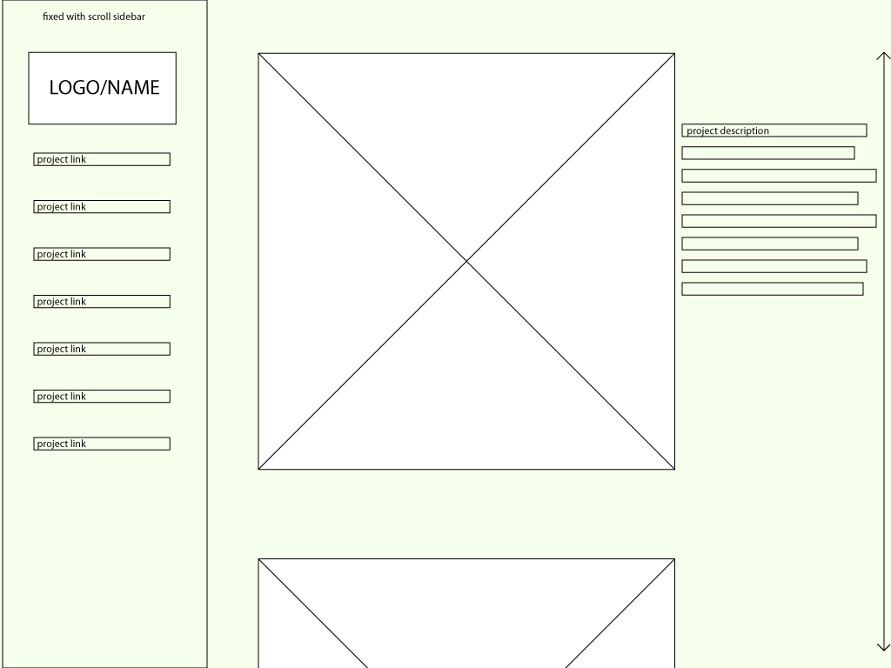
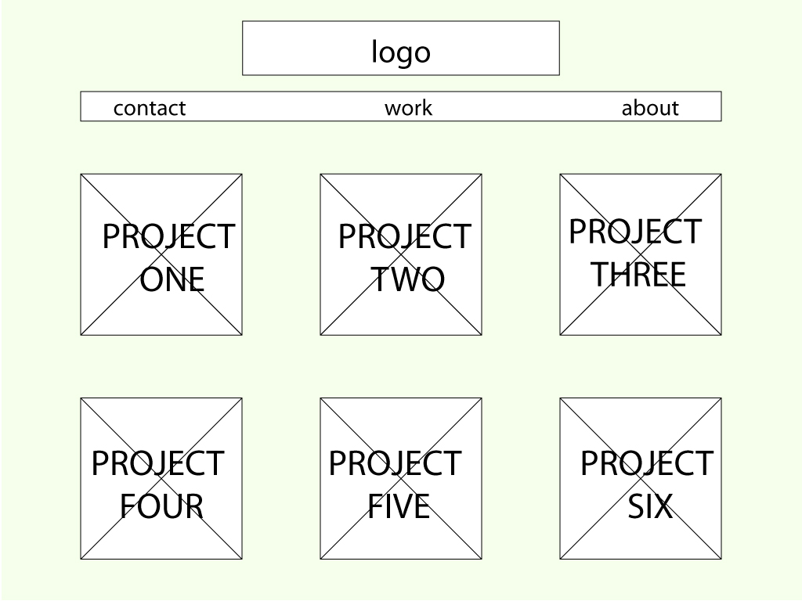
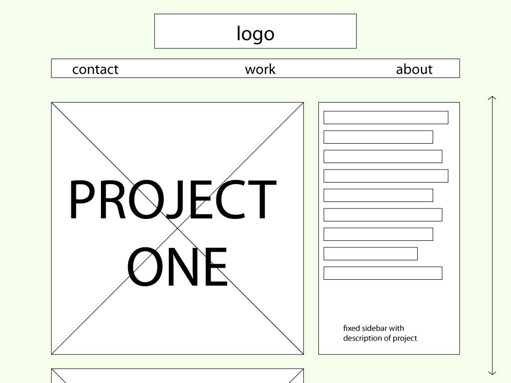
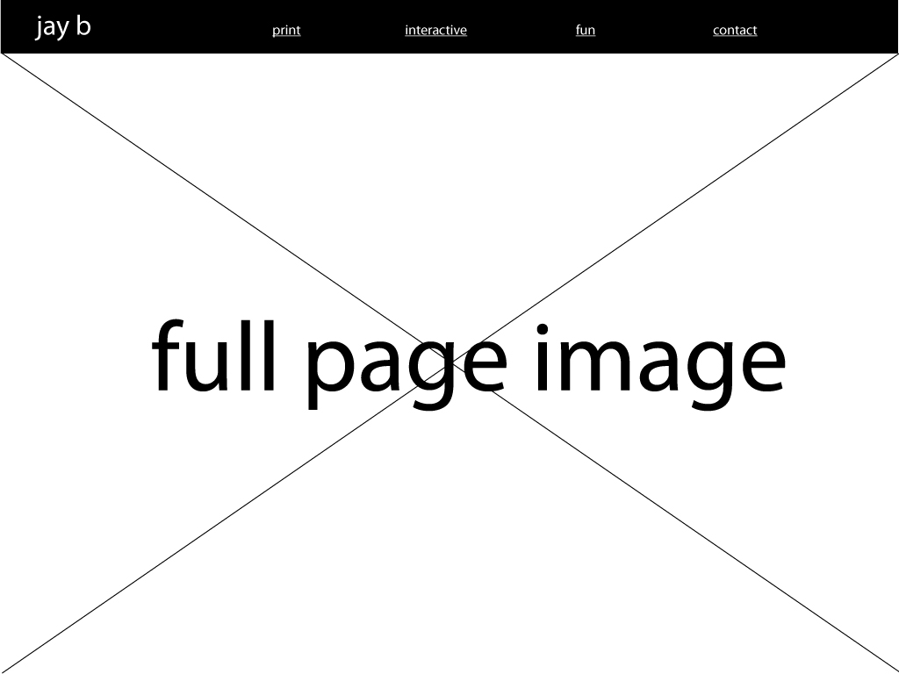
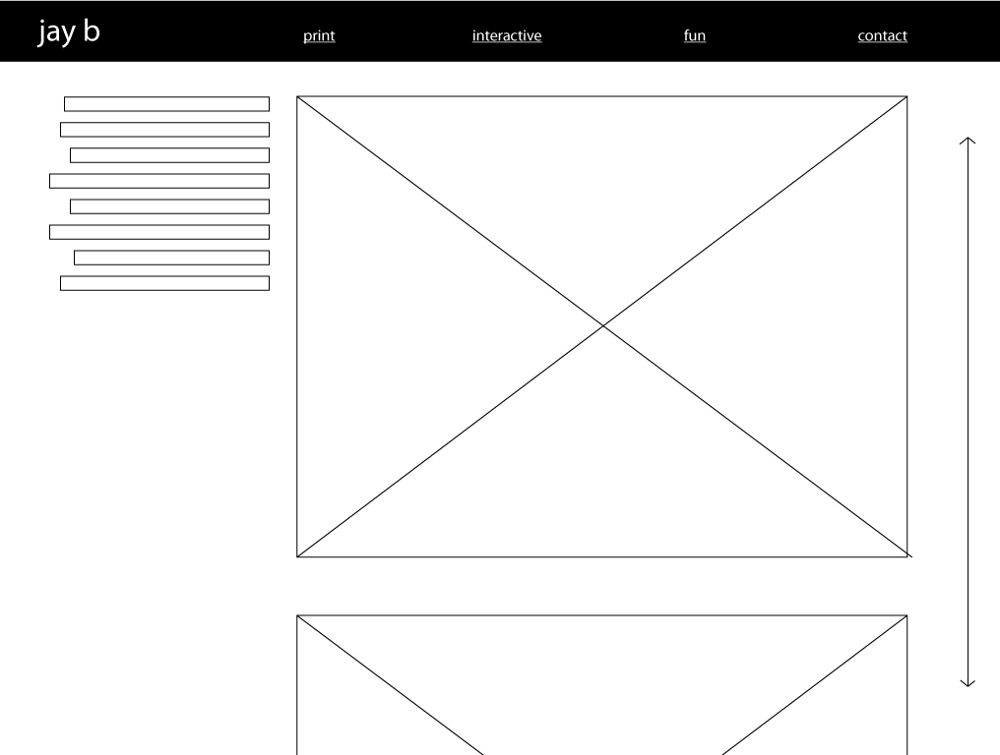

would like to build off of my current portfolio site also would like to host it on my own.
user one
Chuck is 37 years old and a product line manager at converse, he knows design and how to deal with computers. He recieved my resume for an internship and followed the link on my resume to my site. He is looking for examples of my work (photos) and how to get in touch with me possible (social media/email links)
user two
Marianne is 60 years old, worked in advertising earlier in life and recieved an email from her nephew with a link to his updated website. She is browsing on her Ipad, and is looking for photos of my work, a pdf of my resume to double check I spelled everything right, and a way to email me back directly from my site
user three
Dara is a 26 year old designer at Mullen, I applied for an internship on career services and she's googled me to find my work. She wants to see photos of my work, a clear heirarchy in my website, ways to contact me, and my instagram to make sure I don't party too hard so I'll miss days at work due to hangovers
This is my first wireframe, it's a sidebar that's fixed and projects open in an iframe with a verticle scroll

This is my second idea, it's a bunch of square icons of my work that lead to seperate pages with more photos and descriptions of the work


This is my third idea, it's a full page image at the start with a nav at the top that will take you to different kinds of work I do which will have a verticle scroll with additional images

